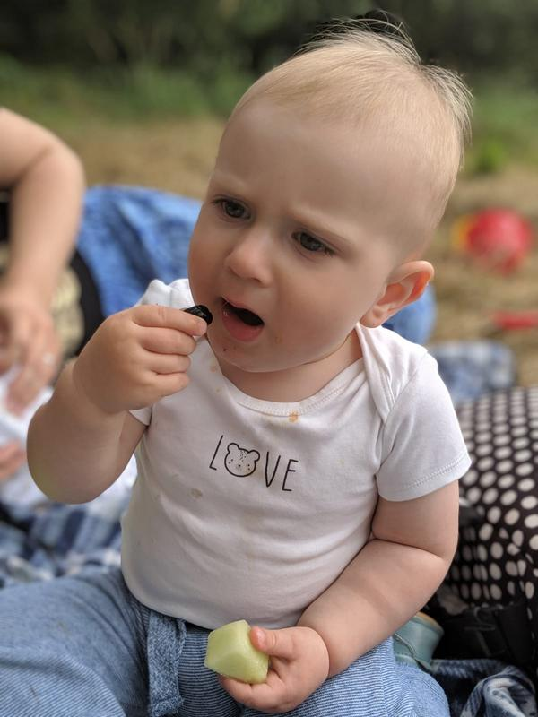

Občas mám černé svědomí z toho, že nejsem vůbec důsledná v zapisování do Olího vzpomínkové knížky. Ty nejdůležitější milníky většinou zaznamenám, ale je toho tolik, co už zmizelo v nenávratnu… A protože mám dneska trochu času a Olímu je teď 15 měsíců, řekla jsem si, že tady uchovám aspoň pár aktuálních postřehů.
- Olí ve svých 15 měsících nosí velikost 86-92.
- Už dva měsíce zdárně ťapá po svých. V prostředí, kde to zná, se nebojím nechat ho běhat samotného. Na chodníku nebo jiném tvrdším povrchu mám pořád tendenci ho “jistit”, protože už máme za sebou i pár ošklivých pádů.
- Vyleze sám na gauč a sleze sám z postele.
- Zhruba ve stejné době, kdy začal chodit, nám začal také spávat celou noc v kuse. Máloco mámě na mateřské zkvalitní život tolik, jako dosažení tohoto milníku :D!
- Ke spánku ho ukládáme stále okolo 8. hodiny a probouzí se většinou mezi 6. a 7. ráno.
- Ač jsem si plánovala, že touhle dobou už dávno kojit nebudu, opak je pravdou. Spíš než jakékoliv jiné důvody je to moje lenost a pohodlnost, co mi brání přestat.
- Olí je stále báječný jedlík. Miluje všechno možné ovoce, speciálně banány je schopný jíst fakt ve velkém. Nepohrdne ani zeleninou, ať už jako přílohu (rajčata, salátovou okurku) nebo i hlavní chod (zeleninová pyré). Maso se u nás doma moc nevaří, naštěstí se ale o jeho přísun starají prarodiče. Pečivo se mu taky snažím necpat každý den, ale má ho rád, stejně jako mléčné výrobky (bílý jogurt, cottage cheese, čerstvý sýr i náš domácí kefír).
- U žádné hračky moc dlouho nevydrží. Obecně má radši ty mluvící a blikající, které bych mu v životě nekoupila (a tak je máme různě povypůjčované :D), ale vyhraje si i s klasikami typu vkládačka tvarů nebo navlékání kroužků na tyčku. Duplo ho baví spíš rozkládat a komíny z kostek bořit :D Hodně si ale oblíbil Péťův hudební set (obzvlášť rád buší do tamburíny). Jo a miluje knížky!!!
- Období kramaření v šuplících a skříních už ho celkem opouští, ale pračka, myčka a sušička jsou stálice. Miluje je tak moc, že už jsem se je naučila vypojovat ze zásuvky, jinak by nám doma asi jely nonstop 8-)
- Slovní zásobu zatím Olí moc pestrou nemá. Spoustu věcí označuje slovem “BE” (většinou tak volá na psy), “MAM” používá, když po mě něco chce a slovem “BA” označuje balon, bác a spoustu dalších věcí. “TATA” říká velmi často, leč nahodile. Umí ale krásné “PAAA” a “MŇAM” - to by mu šlo :D. Každopádně jsem překvapená tím, že spoustě slov rozumí, ačkoliv je ještě neumí vyslovit.
- Rád si ťuká svým hrnečkem “na zdraví” a když mu po jídle zůstane prázdný talíř, roztomile rozkládá rukou, že už “néni” :D
- Venku ho fascinují především pejsci a zvířata obecně, na nebi ukazuje letadla a letící ptáky.
- Nejšťastnější je ve společnosti dětí. A obecně je velice společenský. Nebojí se ani cizích lidí - často se takhle s někým dává “do řeči”, což přináší spoustu komických situací :D
- Umí se už vztekat tak, že bych někdy vyletěla z kůže, ale stejně je to pořád moje malé roztomilé miminko <3

Jídlo vždy a všude - typickej Olí :-)))